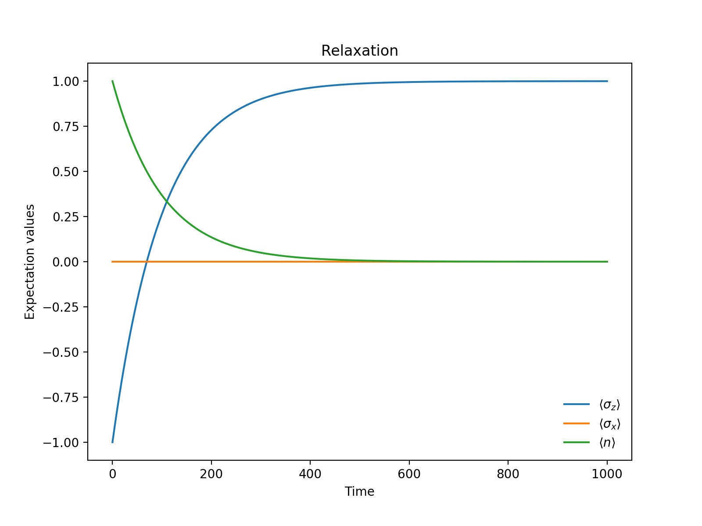
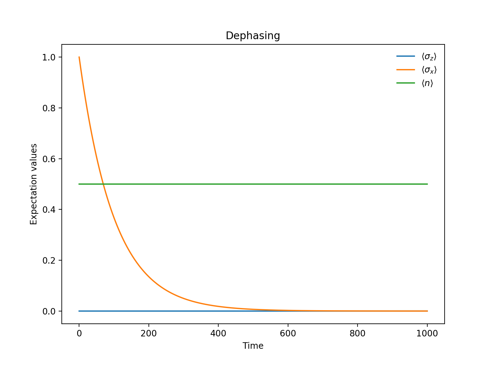

量子噪声介绍和QuTiP模拟
本文讨论量子噪声。
参考文献：
- A.~A. Clerk, M.~H. Devoret, S.~M. Girvin, F. Marquardt, and R.~J. Schoelkopf, Introduction to Quantum Noise, Measurement and Amplification, Rev. Mod. Phys. 82, 1155 (2010).
- Nielsen, Michael A., and Isaac L. Chuang. Quantum Computation and Quantum Information: 10th Anniversary Edition. Cambridge: Cambridge University Press, 2010.
- J. R. Johansson, P.D. Nation, and F. Nori, “QuTiP 2: A Python framework for the dynamics of open quantum systems”, Comp. Phys. Comm. 184, 1234 (2013).
1. 经典噪声和量子噪声
1.1 经典噪声
一个电压信号 \(V(t)\) ，\(\langle V(t)\rangle=0\)，服从正态分布。
自相关函数（autocorrelation function)
$$ G_{VV}(t-t’)=\langle V(t)V(t’) \rangle $$
自相关函数随时间衰减，特征时间为\(\tau_c\)。
功率谱密度函数（spectral density)
$$ S_{VV}[\omega]=\int_{-\infty}^{+\infty}\mathrm{d}t e^{i\omega t}G_{VV}(t) \tag{1.1} $$
从功率谱密度求自相关函数，做一个逆傅立叶变换：
$$ G_{VV}(t)=\int_{-\infty}^{+\infty}\frac{\mathrm{d}\omega}{2\pi} e^{-i\omega t}S_{VV}[\omega] $$
自相关时间极短，即白噪声（white noise），功率谱密度为常数： $$ S_{VV}[\omega]=\sigma^2 $$ $$ G_{VV}(t)=\sigma^2 \delta(t) $$
经典噪声的功率谱密度为偶函数。 $$ S_{VV}[\omega]=S_{VV}[-\omega] $$
1.2 经典噪声测量
1 MHz 以下 直接测量

1 GHz 以上

1.3 量子噪声
功率谱密度函数（spectral density)
$$ S_{xx}[\omega]=\int_{-\infty}^{+\infty}\mathrm{d}t e^{i\omega t}\langle \hat{x}(t)\hat{x}(0)\rangle \tag{1.2} $$
量子噪声的功率谱密度不为偶函数。
$$ S_{VV}[\omega]\neq S_{VV}[-\omega] $$
其正频率部分与被谐振子吸收的受迫辐射能量相关，其负频率部分与谐振子发出的辐射能量相关。
2. 几个例子
封闭孤立系统中的态变换可以用 Schrödinger 方程描述。
对于开放系统，态的变换不是幺正变换，需要用主方程（master equation）描述。
Lindblad Master Equation
$$ \frac{\mathrm{d}\hat{\rho}}{\mathrm{d}t}=-\frac{i}{\hbar}[\hat{H},\hat{\rho}]+\sum_j \hat{L}_j\hat{\rho}\hat{L}_j^\dagger-\frac{1}{2}\{\hat{L}_j^\dagger\hat{L}_j, \hat{\rho}\} $$
2.1 激发态原子的自发辐射 Relaxation
以二能级系统为例
$$ \hat{H}=\frac{\hbar\omega_q}{2}\hat{\sigma}_z $$
定义： $$\ket{\uparrow}\equiv\ket{1} $$
$$\ket{\downarrow}\equiv\ket{0} $$
Lindblad 算符 $$ \hat{L}=\sqrt{\gamma_r}\hat{\sigma}_-=\sqrt{\gamma_r}\ket{0}\bra{1} $$
假设初态为\(\ket{\psi}=\ket{1}\)，代入 Lindblad 方程计算。
省略计算过程得到：
$$ \hat{\rho}(t)=\begin{bmatrix} 1-e^{-\gamma_r t}&0\\ 0&e^{-\gamma_r t} \end{bmatrix} $$
用QuTiP模拟：

最终趋向稳态\(\ket{0}\)。
代码如下：
|
|
2.2 退相干 Dephasing
描述退相干过程的 Lindblad 算符为：
$$ \hat{L}=\sqrt{\frac{\gamma_\phi}{2}}\hat{\sigma}_z=\sqrt{\frac{\gamma_\phi}{2}}(\ket{1}\bra{1}-\ket{0}\bra{0}) $$
假设初态为\(\ket{\psi}=\frac{1}{\sqrt2}(\ket{1}+\ket{0})\)，代入 Lindblad 方程计算。
省略计算过程得到：
$$ \hat{\rho}(t)=\begin{bmatrix} 1-\frac{1}{2}e^{-\gamma_r t}&\frac{1}{2}e^{-(\frac{\gamma_\phi}{2}+\gamma_r) t}e^{i\omega_q t}\\ \frac{1}{2}e^{-(\frac{\gamma_\phi}{2}+\gamma_r) t}e^{-i\omega_q t}&\frac{1}{2}e^{-\gamma_r t} \end{bmatrix} $$
用QuTiP模拟：

代码如下：
|
|